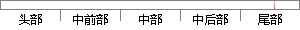

因篇幅有限，不能将所有细枝末节整理成表格。
片段位置图

相似结果|
相似片段 1：)NEXTIREnIRN由于文章篇幅有限，不可能把5万多句程序一一罗列，所举之例具有一定的代表性。首先把所有测试条件按测试项整理成表格，表格需详细清楚，便于编程和查询，接着就按表格的内容编程和调试。第六章
|
※ 片段修改建议 ※
近似词参考：- 不能：不克不及
- 所有：全部
- 整理：清算 收拾整顿 整顿 收拾
系统自动生成语句：因篇幅有限，不克不及将全部细枝末节清算成表格。
注：本片段修改建议为系统自动生成，仅供参考。